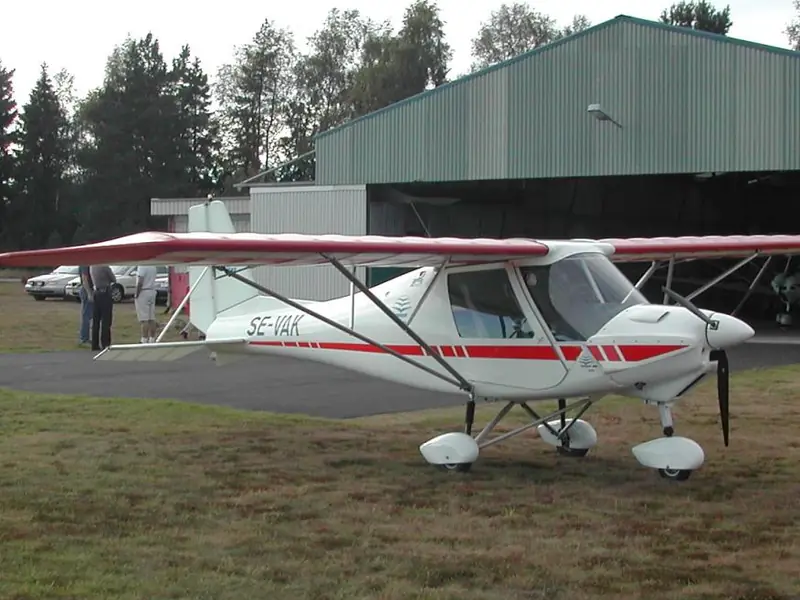

Light-Sport Aircraft
S-LSA, E-LSA & Experimental Aircraft Support
S-LSA, E-LSA, and experimental aircraft do not use identical maintenance assumptions. Documents, category/class privileges, operating limitations, and manufacturer instructions define the authority before scope is confirmed.
Send Aircraft DetailsDocument Review
Authority Starts with the Paperwork.
Work scope is determined from the aircraft airworthiness certificate, operating limitations, manufacturer maintenance manual, ROTAX documentation, service bulletins, safety directives, and certificate privileges.

KAKH-based Support
Based at KAKH / Gastonia Municipal Airport and serving light-sport aircraft owners across the Charlotte / Carolinas region.
Practical Inspection Planning
What a Records-first Light-Sport Inspection Planning Path May Include
Inspection support starts by sorting the documents and practical service items together so the supportable path is clear before the appointment is treated as routine.
Required Inputs
Documents Define the Next Step.
Manual-driven Maintenance Control
Regulatory Discipline is Part of the Service.
Maintenance authority and return-to-service privileges depend on the aircraft's certification basis, operating limitations, applicable regulations, manufacturer instructions, and the certificate/rating involved.
Start with These Documents
Send the airworthiness certificate, operating limitations, last inspection entry, make/model, N-number, engine model, and relevant logbook photos before scheduling.
Why Category Matters
S-LSA, E-LSA, and Experimental Aircraft Do Not Use the Same Assumptions.
Light-sport aircraft support starts with category. A Special Light-Sport Aircraft and an Experimental Light-Sport Aircraft may look similar on the ramp, but the documents, maintenance instructions, operating limitations, and inspection context can point to different requirements.
For S-LSA aircraft, manufacturer maintenance instructions and safety directives can be central to the work boundary. For E-LSA aircraft, operating limitations and condition inspection context often drive the review. The aircraft documents decide the path.
Operating Limitations
The Operating Limitations Are Not Optional Background.
Operating limitations can define inspection language, required records, modification boundaries, and operating restrictions. They also help separate remote records review from work that needs aircraft access or owner coordination.
Maintenance records matter because they show continuity: who did the work, when it was done, what instructions were referenced, and whether recurring items were handled traceably.
Condition Inspection Context
The Inspection Entry Has to Match the Aircraft and Privileges.
Condition inspection support depends on the aircraft operating limitations, category/class, applicable instructions, records, and certificate/rating privileges. The goal is to define the supportable path before any light-sport task is treated as generic.
What helps first: N-number or tail number, aircraft location, airworthiness certificate, operating limitations, last inspection entry, aircraft make/model, engine model, and the maintenance or inspection need.
Start With the Facts
Send the Aircraft Documents and What Needs to Be Evaluated.
S-LSA, E-LSA, and experimental aircraft support depends on the aircraft documents, maintenance history, operating limitations, and applicable privileges. Send the aircraft type, location, and requested scope.
Send Aircraft DetailsCommon Support Examples
Light-Sport Work Starts by Defining the Boundary.
Owners often need help sorting condition inspection preparation, ROTAX maintenance records, rubber replacement timing, unresolved squawks, prebuy findings, operating limitation questions, or manufacturer-instruction questions. The correct response depends on the aircraft category and documents in force.
A request may be simple, but the boundary still matters. A loose logbook entry, missing operating limitation, undocumented modification, or unclear inspection privilege can change the next step.
The first conversation is intentionally document-led so the aircraft, owner, and service process are not pushed by unsupported assumptions.
Owner Coordination
Appointments Work Better When the Records Arrive First.
Before tools come out, Lima Charlie Aero LLC wants the aircraft identity, location, need, and document set captured. That keeps assumptions from becoming maintenance plans and helps decide whether the next move is records review, photos, aircraft access, airfield coordination, or scheduled work at KAKH / Gastonia Municipal Airport.